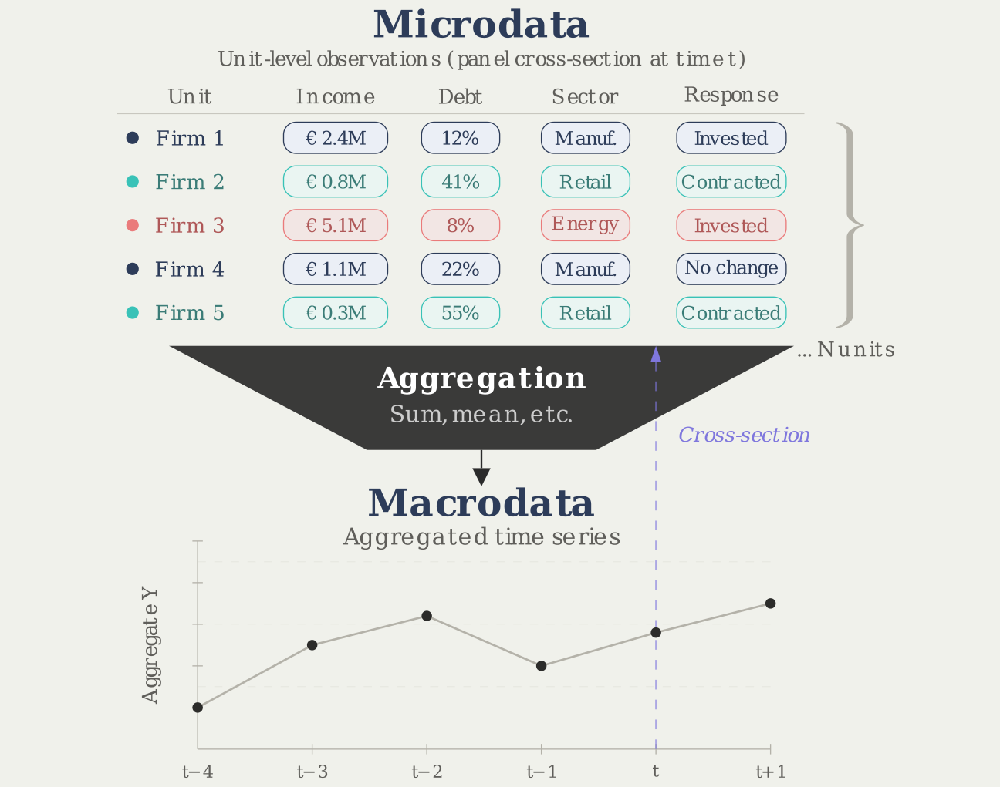
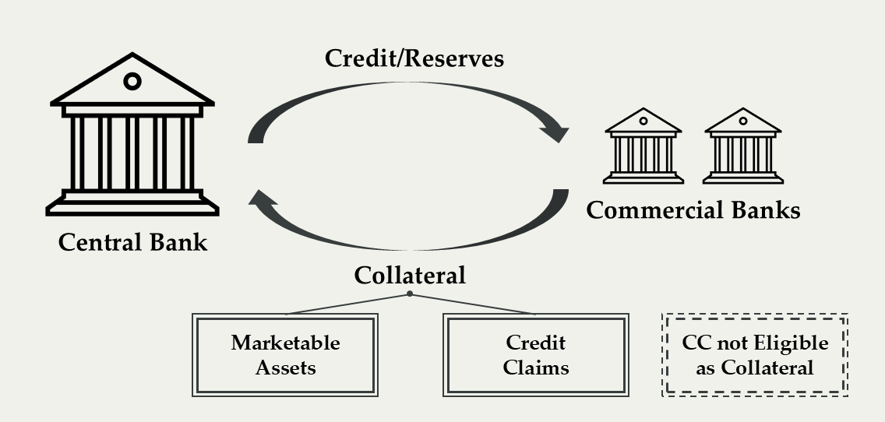

Ville Voutilainen
10 April 2026
Views expressed are those of the presenter.

Did the pass-through of monetary policy change during the Negative Interest Rate Period?
Does being eligible as central bank collateral affect the pricing of corporate loans?

Who are the owners of commercial real estate and does ownership affect CRE loan pricing?
References